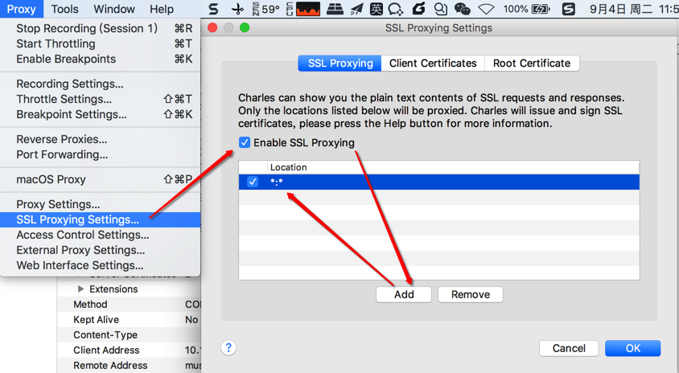
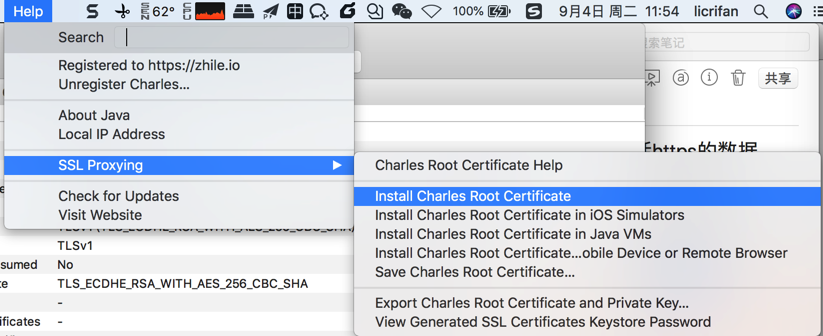
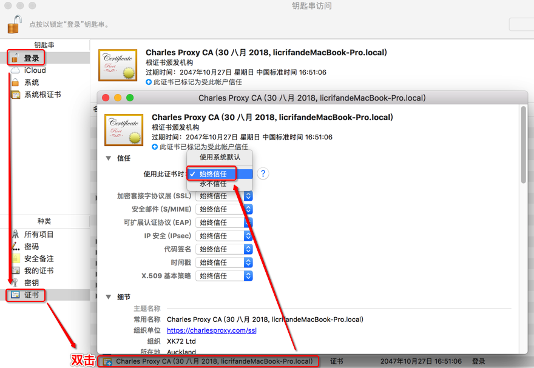

复杂的https请求
接着介绍如何用Charles配合其他相关工具，如夜神安卓模拟器，Xposed框架或太极Magisk框架，以及插件JustTrustMe等，去实现抓包app中加了密的https的请求，即绕过https，看到明文的数据。
Charles抓包移动端app的https请求的流程
核心步骤和思路：
- 电脑端
- 安装Charles的根证书
- Mac
- 用钥匙串去信任Charles的根证书
- Mac
- Charles中
- 启用
Enable SSL Proxying- 再设置对应的过滤api地址
- 启用
- 安装Charles的根证书
- 手机端
- 安装Charles的根证书
- Android
- 注意类型选择为：
VPN和应用- 不要选择：WLAN
- 确保证书安装成功
受信任凭据 -> 用户中可以看到已安装的Charles证书
- 注意类型选择为：
- iOS
- 安装证书后，
iOS 10.3+还需要信任根证书
- 安装证书后，
- Android
- 安装Charles的根证书
下面详细介绍如何操作。
Charles中开启SSL代理
Proxy -> SSL Proxying Settings -> SSL Proxying -> Enable SSL Proxying

然后去点击Add，设置为：
- Host:
* - Port:
*
设置后是：
Location:*:*- 表示：针对所有的
https的请求都启用SSL代理- 这样所有的https的请求，都可以看到解密后的明文了
- 表示：针对所有的
电脑中安装并信任Charles根证书
此处以Mac为例，解释如何在Mac中安装Charles根证书，并设置信任。
通过Charles中的帮助，把Charles的根证书安装到当前电脑中
点击Charles的
Help -> SSL Proxying -> Install Charles Root Certificate

会弹出 （调用Mac的）钥匙串KeyChain Access，去其中设置信任Charles的根证书：

即可看到证书从红色变蓝色➕加号的：
此证书已标记为受此账户信任
移动端安装Charles的ssl证书
接着就是去移动端的手机中安装Charles的ssl证书。
概述：
- Android端
- 得到Charles的手机端的证书
- 有两种方式
- 自己下载
- 手机端打开 http://chls.pro/ssl ，会自动弹框去下载得到ssl证书
- 比如：
charles-ssl-proxying-certificate.pem - 注意：事先要给手机端设置好Charles的代理，否则只能打开和看到普通网页，无法弹框下载
- 比如：
- 手机端打开 http://chls.pro/ssl ，会自动弹框去下载得到ssl证书
- 从别处拷贝
- 从PC端Charles导出手机端要安装的证书
- 比如：
charles-ssl-proxying-certificate.cer
- 比如：
- 别人下载好的 或 你自己之前下载好的，拷贝或发送到手机端
- 从PC端Charles导出手机端要安装的证书
- 自己下载
- 有两种方式
- 去安装证书
- 直接点击即可开始安装
- 如果不行，则通过
从存储设备安装去安装，确定是可以安装的
- 如果不行，则通过
- 安装期间的设置
- 凭据类型：
VPN和应用- 不能选
WLAN
- 不能选
- 凭据类型：
- 安装完毕后确定安装成功
受信任的凭据 -> 用户中可以看到已安装XK72 Ltd Charles Proxy CA字样的证书
- 直接点击即可开始安装
- 得到Charles的手机端的证书
- iOS端
- iPhone中打开 http://chls.pro/ssl ，按照提示下载安装证书，以及信任证书
详解：
详见后续章节：移动端安装ssl证书